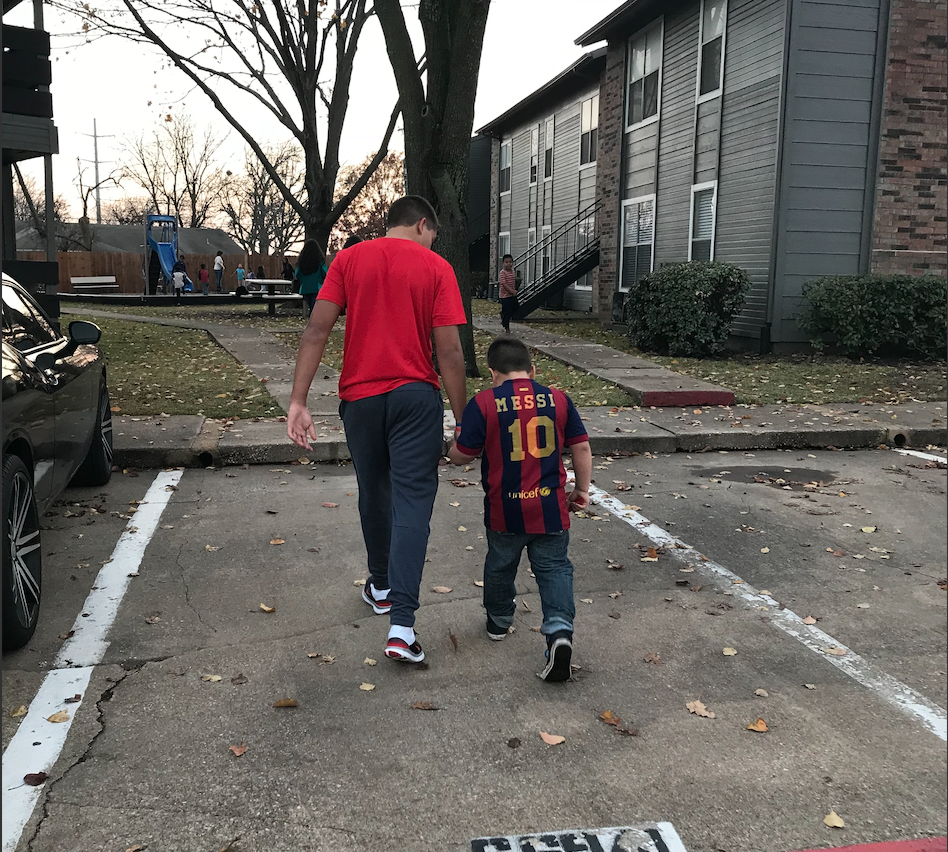

Passion for Service
Serving others as Christ taught
Ingrained from a young age
I am very grateful to my parents for showing me
how to serve at a young age. We were taught to be
grateful for what we have, and to help those who need help.
As I have grown in my love
for Christ, my heart to serve others has grown.


Every little brother looks up to his older siblings.
My older sister and brother showed me by example how putting others before yourself
is something to strive for. By their actions,
I saw how living selfless actually
gets the most out of your own life.
Redbud Apartment
My family started volunteering at an
apartment
complex called Redbud when I was around 11 years old. These kids
were some of the sweetest and happiest I'd ever met. We
kept on coming back and eventually made it our own.
Sports camps in the summer, Christmas gift drives,
Thanksgiving meals, and Easter services were a yearly thing.
My sister took charge in high school, and when she left to college,
my older brother took the reins. When my brother left to college,
I was next to lead our fanily passion.


For 8 years we were able to pour into these kids,
and inspire them to become more than they thought was possible.
The kids started dreaming of becoming doctors, teachers,
police officers, veterinarians, and
even video game creators (this one was popular).
My passion for service grows more every year, and serving
like Christ is something I strive for daily.
Current Serving
Today, I am serving as a mentor for Tucson Mentoring Kids program. My purpose in serving in this organization is to be a positive male role model for just one boy that needs it.